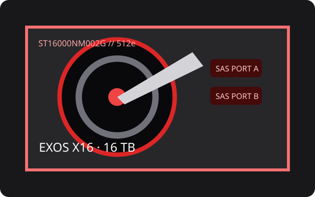

[ IDENTIFIED HDD // MODEL-SPECIFIC RECORD ]
Seagate Exos X16 ST16000NM002G
16 TB 7,200-rpm helium enterprise HDD, SAS edition. Its ST16000NM002G model code is not interchangeable with similarly named SATA X16 products.

Recorded specifications
| Exact model | Seagate Exos X16 ST16000NM002G |
|---|---|
| Capacity | 16 TB |
| Sector format | 512e; this SKU is the 512e SAS configuration |
| Interface / ports | SAS-3, 12 Gbit/s, dual-port |
| Rotational speed | 7,200 rpm |
| Cache | 256 MB |
| Form factor | 3.5-inch, 26.1 mm helium drive |
| Workload / reliability | 550 TB/year workload rating and 2.5 million-hour MTBF, per Exos X16 manufacturer documentation. Ratings are fleet/population metrics, not predictions for one unit. |
Host compatibility and qualification
- Connect to a SAS HBA/RAID controller and SAS backplane/expander supporting 12G SAS, 16 TB devices, dual-path wiring as needed, 3.5-inch mounting and adequate power. SATA-only hosts cannot operate this SAS SKU.
- Older SAS controllers may negotiate lower rates if supported, but check firmware, maximum LBA/capacity, 512e handling, and the OEM drive compatibility list before RAID use.
- Use workload ratings as limits rather than endurance promises; watch vibration, temperature and rebuild exposure, and maintain tested backups.
Manufacturer sources
- Seagate — Exos X16 product data sheetManufacturer family specifications and model selector.
- Seagate — Exos X16 512e SAS product manualManufacturer installation and detailed drive manual; match complete model suffix.